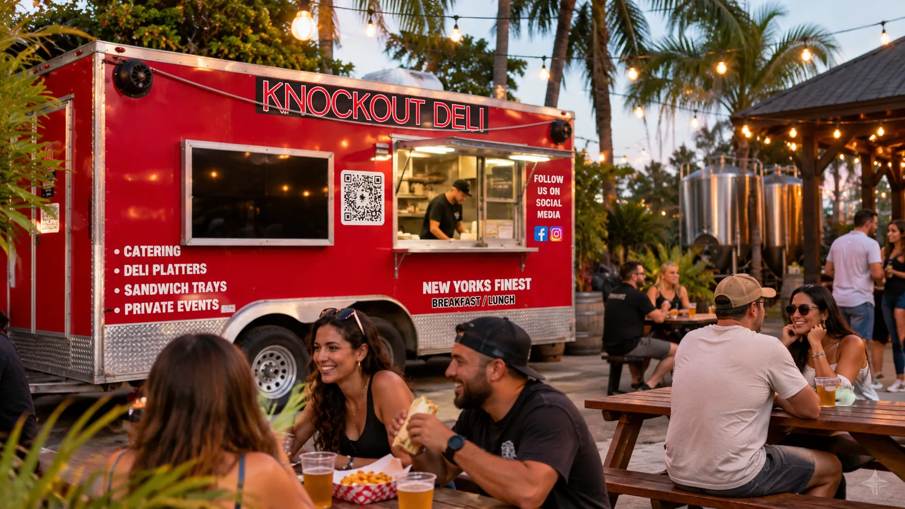
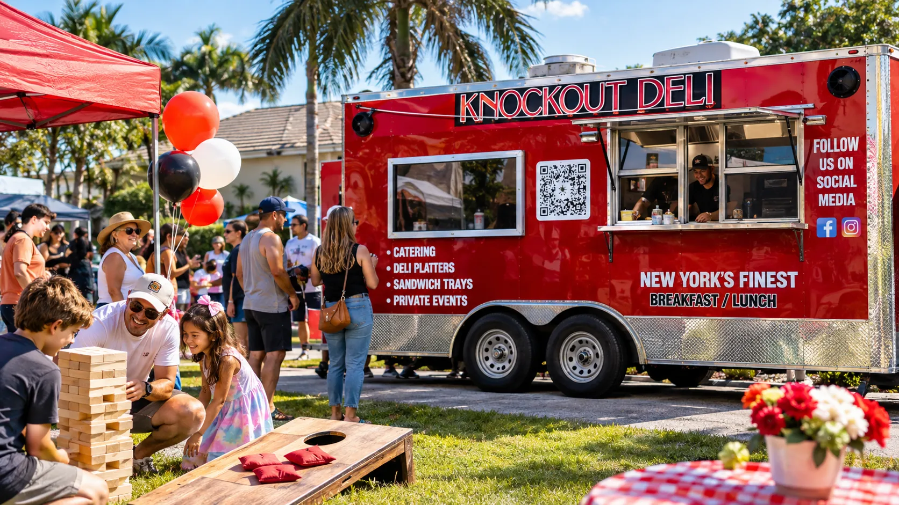
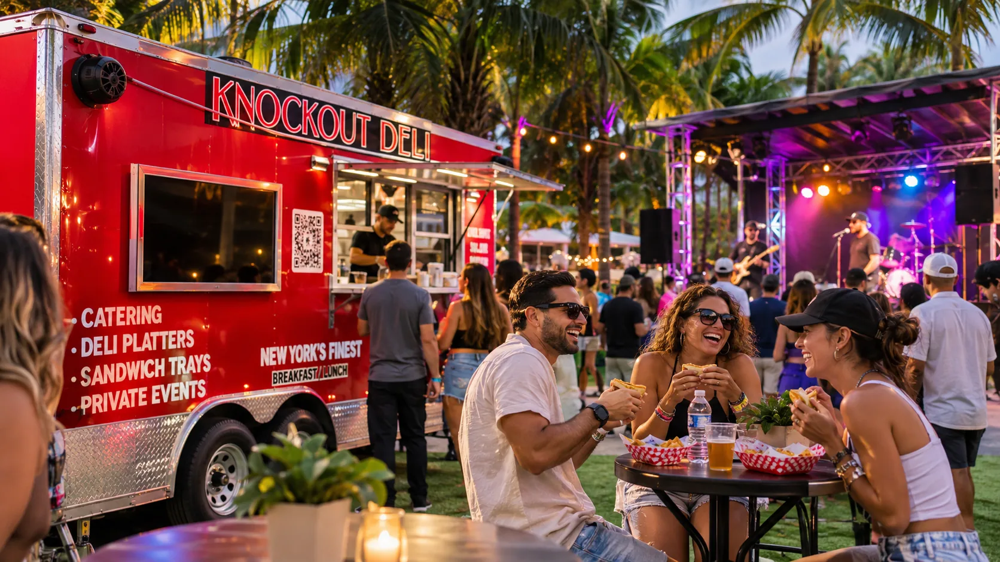

NEW YORK DELI · SOUTH FLORIDA
GOOD FOOD.
GREAT STOPS.
KNOCKOUT DELI.
The flavor of a New York deli, served from a red food truck across South Florida. Come hungry. Find us on the move.
01 / THE TRUCK
NOT YOUR
AVERAGE
LUNCH STOP.
A red truck with a New York appetite.
Knockout Deli brings deli sandwiches, breakfast favorites, and comfort food to the places people gather. From a quick bite at the window to a community event, it's all about real food and a memorable stop.
FOLLOW OUR NEXT STOP THE REAL KNOCKOUT DELI TRUCK
THE REAL KNOCKOUT DELI TRUCK02 / WHAT WE SERVE
THE FOOD
SPEAKS.
Big sandwiches, deli classics and breakfast favorites — a few reasons to make the stop.
EXPLORE THE DIGITAL MENU




03 / OUT IN THE COMMUNITY
BRING THE
FOOD.
MAKE IT
AN EVENT.
Knockout Deli is about more than the window. The truck also offers catering, deli platters, sandwich trays and private events.
04 / FIND THE TRUCK
GOOD FOOD.
ON THE MOVE.
Our stops change. Check the latest announcements before you head out to meet the truck.
Dates, hours and locations are shared by Knockout Deli. We won't guess where the truck is today.
SEE OFFICIAL UPDATES
05 / ORDER YOUR WAY
READY FOR
A KNOCKOUT?
See the food first. Then explore the digital menu for window pickup, or use the business's existing DoorDash ordering option.
Ordering on this concept website is a preview, not a submitted or paid order.